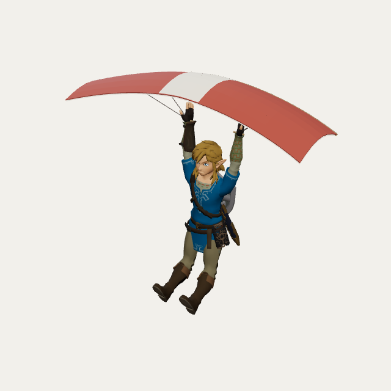

This is the same paragliding Link model as the TV loop. Play the loop on the TV, open this page, and place him right at the TV's floor line — he comes to life and steps out of the screen into your room.

Not on iPhone? The raw model is here too: link-paraglider.glb